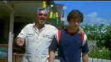

|
Boogie
Nights/B+,A |
|
New Line/1997/128m/WS,ANA
2.35
|
The peripatetic camera of sophomore director Paul Thomas Anderson tracks through scenes much as his
tale of the porno movie industry tracks through years. Moving with such ease and confidence,
writer/director Anderson tackles very colorful subject matter in high style. Anderson dares to
change tone dramatically, and you have to give him credit for it. It vaults you from one movie
driven by the exhilarating action of his camera to a darker, much more static reality. Yet, through
all the sex, drugs, violence and perversion, Boogie Nights is more about family than
anything else. It may not be conventional family, but the world of director Jack Horner is clearly
a reflection of family with Jack as the Poppa and Amber as the Momma. Taken from this point of view
gives Boogie Nights an unusual emotional undercurrent that tints the shallow world of
glitter and lust.
 Eddie Adams is a kid with a big schlong and an
innocent energy that combines to make him pornographic pin-up boy Dirk Diggler. Discovered by porno
director par excellence Jack Horner, Digglers rise to the top is so swift and often innocent that
it can only foretell a fall. Anderson is brilliant in depicting the party life style of Horner's
extending family of entertainers and hangers-on. This is sleaze with ease lubricated by the ever
energetic camera work.
Anderson conducts a wide range of acting styles melding them into ensemble
seamlessness. Mark Wahlberg is perfect as Eddie Adams/Dirk Diggler, possessing the combination of
innocence and desire that makes the character exist in this movie world. For Burt Reynolds, Jack
Horner is a splendid autumnal role. Reynolds find humor and pathos in this portrait of a director
at the hub of this porno world. Julianne Moore as the spaced out Amber is such a sad character, a
blasé artifact of easy drugs and free sex. The ambitious film has lots of large supporting roles
which are often done with enormous flare.
This is a splendid DVD presentation on a number of levels. Consistently
sharp and vibrant, this New Line is very film-like handling the complex camera movement with no
artifacts. You can't ask much more than this DVD delivers. The sound is detailed, directional, and
full range. This special edition has a wealth of material for the film lover. In addition to the
informative and enthusiastic commentary by Anderson(perhaps too many expletives.), there are
deleted scenes, a music video, trailers, and a fine menu interface. Have fun!
|
|
|
|


Apocalypse Now is Coppola's distorted vision of war now on DVD in
gorgeous anamorphic images.

Tucker: The Man and His Dream is beautifully filmed with loving attention to detail.
 
DVDPlanet is the DVD
incarnation of legendary laser retailer Ken Crane's. Deep discounts and serious service.
 Direct from the corridors of the Home Theater Forum, Home Theater Talk is the
newest place on the Net to discuss everything home theater. Friendly atmosphere and knowledgeable
folks are the secret ingredients. Direct from the corridors of the Home Theater Forum, Home Theater Talk is the
newest place on the Net to discuss everything home theater. Friendly atmosphere and knowledgeable
folks are the secret ingredients.

The Feature Archive
has articles ranging from Akira
Kurosawa to Blonde Bimbos.
Movie Rage: Death in the Aisles
Everyone knows what it feels like to get angry at the
movies these days. Here's a humorous but not so delightful view of big screen misery.

Catch the Hollywood take on Blonde Bimbos by clicking on the
image above.
|